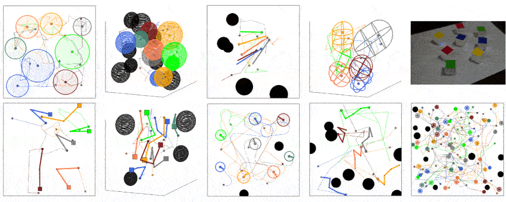

Quick Multi-Robot Motion Planning
by Combining Sampling and Search
Keisuke Okumura and Xavier Défago

Overview
We propose a novel algorithm to solve multi-robot motion planning (MRMP) rapidly, that we call Simultaneous Sampling-and-Search Planning (SSSP).
Conventional MRMP studies mostly take the form of two-phase planning that constructs roadmaps then finds inter-robot collision-free paths on those roadmaps.
In contrast, SSSP performs roadmap construction and collision-free pathfinding at the same time.
This is realized by uniting techniques of single-robot sampling-based motion planning and search techniques of multi-agent pathfinding on discretized graphs.
SSSP ensures to find a solution if exists on the search space defined by the cartesian product of robot-wise roadmaps.
Our empirical evaluation in various scenarios demonstrates that SSSP significantly outperforms standard approaches to MRMP, i.e., solving more problem instances much faster.
We also applied SSSP to planning for 32 ground robots in a dense situation.
News
- Not yet!
Video
Robot Implementation
The following two repositories are additionally used in the demo of the toio robots:
Citation
@article{okumura2022sssp,
title={Quick Multi-Robot Motion Planning by Combining Sampling and Search},
author={Okumura, Keisuke and D{\'e}fago, Xavier},
journal={arXiv preprint},
year={2022}
}Contact
okumura.k [at] coord.c.titech.ac.jp